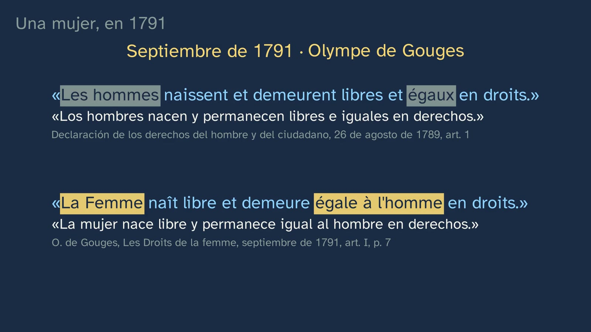
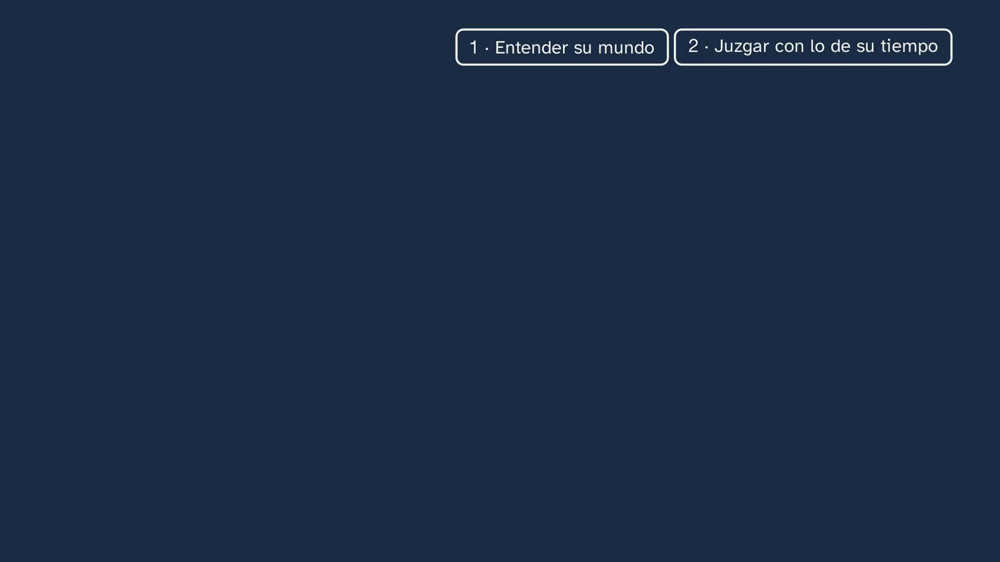

¿Se puede juzgar el pasado?
En pocas palabras
La última herramienta del oficio: juzgar el pasado sin hacerle trampas. El caso abre la clase: en septiembre de 1791, Olympe de Gouges publica una Declaración de los derechos de la mujer y de la ciudadana que sigue artículo por artículo la de 1789 y pone a la mujer en cada uno. Dos años después, la guillotinan. ¿Podemos juzgar hoy a quienes dejaron fuera a las mujeres?
Antes de responder, la clase corrige lo que casi siempre se cuenta: no la condenaron por su Declaración, sino por sus carteles de 1793, sobre todo Les Trois Urnes, que proponía que el pueblo eligiera entre tres formas de gobierno, una de ellas la monarquía. Una ley de marzo de 1793 lo castigaba con la pena máxima. Pero dos semanas después, el Moniteur la puso de ejemplo para las mujeres: «quiso ser hombre de Estado».
Después llega la apuesta, con las dos respuestas fáciles, que son las dos trampas de hoy. El presentismo («eran menos listos que nosotros») mide a la gente del pasado con lo que hoy sabemos. «Eran otros tiempos» da por hecho que nadie veía entonces lo que hoy vemos. Las dos niegan lo mismo: que la gente del pasado pensara. Para salir de las dos, dos pasos:
- Entender su mundo, con sus fuentes. Talleyrand ve la contradicción en 1791 («parece imposible de explicar») y aun así la defiende con la naturaleza; el decreto que cierra los clubes de mujeres y el informe de Amar (30-10-1793) razonan desde la misma idea. No eran tontos: partían de una idea que casi todos daban por hecha.
- Juzgar con lo de su tiempo: quién lo vio de otra manera, y lo dijo (Condorcet, Gouges, Wollstonecraft, Charlier en la misma sesión del decreto), y qué decían sus propios principios (el artículo 1 de 1789). Así que sí, se les puede juzgar.
El alumnado aplica los dos pasos a un segundo caso, los niños de las fábricas británicas de 1832–1833, y la clase cierra con la diferencia entre un juicio histórico argumentado y un anacronismo, y con un debate abierto entre historiadores: Acton (1895) frente a Bloch (hacia 1942).
Objetivo. Al terminar, el alumnado sabrá entender a la gente del pasado desde sus ideas y su mundo sin justificarlo todo, y distinguir un juicio histórico argumentado del anacronismo.
Una nota sobre la respuesta. La clase no prohíbe juzgar con criterios de hoy: pide decirlo («y si lo juzgas con un criterio de hoy, dilo: así tu juicio se puede discutir»). Y no da por cerrada la discusión entre historiadores: enseña la mejor versión de Acton y de Bloch, y deja que el alumnado tome partido, con razones.
Una nota sobre la neutralidad. El caso de 1793 es de la Revolución, pero la clase no juzga la Revolución ni a un partido: juzga una decisión concreta (el cierre de los clubes de mujeres) con las fuentes de esa misma sesión. Por eso el juicio de la pizarra lleva su objeción más fuerte (la guerra, la pelea en el mercado, «nada de principios») y se queda en lo que se puede sostener.

Currículo
Real Decreto 243/2022, Historia del Mundo Contemporáneo, materia de modalidad de 1.º de Bachillerato en Humanidades y Ciencias Sociales (texto consolidado del BOE). La competencia 7 pide «valorar críticamente […] las acciones llevadas a cabo y las experiencias vividas, desde la perspectiva ética contenida en la Declaración Universal de los Derechos Humanos», y la 8, atender a «la situación de la mujer, a los roles de género y edad […] y a la lucha por la dignidad y contra la discriminación».
| Elemento | Qué dice el decreto | Dónde se trabaja |
|---|---|---|
| Saber básico (bloque A) | «El trabajo del historiador: fuentes históricas, historiografía y narrativas del pasado. Argumentación histórica. […] Perspectiva histórica en las narrativas sobre el pasado.» | Toda la clase: los dos pasos, el juicio en cuatro piezas, Acton y Bloch |
| Saber básico (bloque A) | «La evolución de la situación de la mujer en la sociedad contemporánea: mecanismos de dominación y sumisión y cambios socioculturales. El movimiento por la emancipación de la mujer y la lucha por la igualdad […]» | Gouges, Talleyrand, el decreto y Amar, Condorcet, Wollstonecraft, Charlier; Kent y Campoamor (1931) |
| Saber básico (bloque A) | «Evolución de la población, ciclos demográficos y modos de vida. Cambios y permanencias en los ciclos vitales y en la organización social del mundo contemporáneo. Grupos vulnerables y marginados. […]» | Los niños de las fábricas, 1832–1833; la Ley Benot (1873) |
| Criterio 7.1 | Generar opiniones argumentadas y debatir a través del trabajo sobre textos históricos e historiográficos | El juicio de 1793, pieza a pieza; Acton y Bloch |
| Criterio 8.2 | Analizar la situación de la mujer y los roles de género y edad, con sus mecanismos de dominio y la lucha contra la discriminación | Las mujeres fuera de la política en 1791 y 1793; los niños en la fábrica |
Lo que hay que traer. Las cuatro preguntas de una fuente (clase 1), «¿con qué criterio?» ante la palabra progreso (clase 4) y el argumento en cuatro piezas (clase 5): afirmación, prueba, razonamiento y objeción. Y la Declaración de 1789, que se presenta en una frase.
Dónde vuelve. El tema 2 («El fin del Antiguo Régimen: las revoluciones liberales») trae la Revolución francesa como contenido, con un comentario de texto de la Declaración de 1789 (clase 4) y el Terror (clase 5). El tema 4 vuelve a la fábrica y a la sociedad de clases. Aquí son casos para aprender el oficio.
Cómo está construida la clase
Capítulos del vídeo
| Parte | Qué hace | Por qué |
|---|---|---|
| Lo que ya sabes | Las tres preguntas de la clase 5 y sus soluciones | Recuperar antes de añadir |
| Una mujer, en 1791 | La Declaración de Gouges sobre la de 1789, el artículo X, por qué la condenaron de verdad, y el Moniteur | El caso, con lo que se repite y es falso corregido en pantalla |
| Dos trampas | La apuesta; el presentismo y «eran otros tiempos», que niegan lo mismo | Primero hacer ver el error: es el orden del único experimento sobre contextualizar (Huijgen y otros, 2018) |
| Paso 1: entender su mundo | Talleyrand, el decreto y el informe de Amar; Condorcet y el poder de la costumbre | Entender no es justificar: es saber de dónde salía |
| Paso 2: juzgar con lo de su tiempo | Condorcet, Gouges, Wollstonecraft y Charlier; y el artículo 1 de 1789 | Lo que hoy vemos, alguien ya lo veía, y el criterio estaba escrito |
| Otro caso: niños en las fábricas | Bentley y Crabtree (1832); qué decían quienes lo defendían; Oastler y el Parlamento; la ley de 1833 | El alumnado aplica los dos pasos, con dos pausas para pensar |
| Juicio o anacronismo | La definición, y el juicio de 1793 en cuatro piezas | La objeción acota el juicio, no lo anula |
| ¿Se puede juzgar? | Acton y Bloch; y lo que hoy acepta la mayoría, según quienes estudian cómo se enseña la historia | Un debate abierto, con la mejor versión de cada uno |
| El error típico | Tres frases que clasificar | Las dos trampas, frente a un juicio argumentado |
| Para practicar | El resumen, las seis herramientas del tema, tres ejercicios y la pregunta de los cien años | Kent, la Ley Benot y Campoamor: tres casos españoles |

Plan de una sesión de 50 minutos
| Minutos | Qué se hace |
|---|---|
| 0–4 | Sin vídeo, la apuesta de la hoja: en 1791 las francesas no votan; ¿qué dirías de los hombres que hicieron esas leyes? Cada cual elige y escribe por qué. |
| 4–14 | Vídeo hasta la apuesta («Haz tu apuesta»). Parar y comparar respuestas: ¿cuántos han elegido la 1 o la 2? |
| 14–26 | Vídeo por los dos pasos, hasta Tristán a mitad. Completar la tabla de la hoja: voces en contra y a favor, con su año. |
| 26–34 | Vídeo por el caso de las fábricas, parando en las dos pausas («¿Qué decían quienes lo defendían?», «¿Alguien lo vio de otra manera?»). |
| 34–46 | La actividad: «Un decreto, cuatro piezas» (abajo). |
| 46–50 | Vídeo hasta el final, con la pregunta abierta. Los ejercicios, para casa. |
Errores típicos y cómo se tratan
| Error | Qué dice la investigación | Cómo lo trata la clase |
|---|---|---|
| «Eran menos listos que nosotros» (presentismo) | El alumnado tiende a despachar a la gente del pasado como «not as smart as we are» (Lee, 2005, p. 47), y lo apoya en una idea de pasado de carencias (p. 45). Wineburg lo llama «our psychological condition at rest» (2001, p. 19): es lo que sale sin esfuerzo | Talleyrand ve la contradicción y la defiende: no era tonto, partía de una idea. La palabra «presentismo» es de Seixas y Morton (2013, p. 136), no de Lee |
| «Eran otros tiempos: nadie pensaba otra cosa» | Es el error simétrico. Llevado al extremo, pensar que no hay continuidad con el pasado es «as grave an error» como creer que lo refleja; el pasado es «a foreign country», no «a foreign planet» (Wineburg, 2001, p. 12) | Condorcet (1790), Gouges (1791), Wollstonecraft (1792), Charlier (1793); Oastler (1830) y el Parlamento (1833) |
| «Entender es justificar» | Adoptar la perspectiva de alguien es inferir cómo pensaba, con pruebas, y «does not mean identifying with those actors» (Seixas y Morton, 2013, p. 136) | «Entender esto no es justificarlo: es saber de dónde salía» |
| «No se puede juzgar con criterios de hoy» | Seixas y Morton piden ser «cautious about imposing contemporary standards» (p. 168), no renunciar: los juicios están ahí, implícitos o explícitos, y hay que hacerlos explícitos | Se puede, si se dice: el listón de 1833 frente al de hoy |
| «Ponte en su piel» | Con 254 alumnos neerlandeses, la tarea en primera persona («imagina que estás…») produjo más presentismo y más juicios morales que en tercera (De Leur, Van Boxtel y Wilschut, 2017) | Todas las preguntas, en tercera persona: «¿qué decían quienes lo defendían?» |
| «La guillotinaron por feminista» | Lo repiten vídeos y webs. La acusación trata de escritos contra la «soberanía del pueblo» (ley del 29-3-1793); la Declaración de 1791 no figura (Wallon, 1880, t. II, pp. 167–172). C. Hesse lo resume: «guillotined on 3 November 1793 for publishing a seditious broadside» (Encyclopedia of Modern Europe) | Se dice en pantalla y se tacha; y se cuenta lo que sí pesó su sexo: el Moniteur, dos semanas después |
Preguntas y soluciones
Para y piensa (dentro del vídeo)
- La apuesta: ¿qué dirías de los hombres que hicieron esas leyes? Las dos primeras opciones son las dos trampas. La tercera, «ni lo uno ni lo otro», es la de la clase, pero se valora la razón, no la casilla.
- En su época, ¿con qué se les podía decir que se equivocaban? Con dos cosas: gente de su tiempo que lo dijo, y su propia ley, el artículo 1 de 1789 («libres e iguales en derechos»).
- ¿Qué decían entonces quienes defendían el trabajo de los niños? Que los padres eran libres (la objeción, tal como la resume su rival M. Sadler: «their parents are free agents», Hansard, 16-3-1832, c. 345) y que muchos llevaban a sus hijos a la fábrica, y así los tenían a la vista (W. Bolling, fabricante de algodón, Hansard, 18-7-1833, c. 910; dice «have them under their own eye», sin decir para qué); que, con menos horas, no podrían competir con otros países (Lord Althorp, 5-7-1833; Bolling, c. 911); y que los niños parecían «always cheerful and alert» (A. Ure, 1835, p. 301).
- ¿Alguien lo vio de otra manera, en su tiempo, y lo dijo? Muchos: Oastler («Yorkshire Slavery», Leeds Mercury, 16-10-1830), quienes pedían en el Parlamento dos horas menos al día, y Cobbett, que se burló del argumento de la competencia en la misma sesión (c. 912).
- El error típico. 1) «Eran otros tiempos»: en 1830, Oastler lo llamó esclavitud. 2) Presentismo: razonaban desde la idea de la naturaleza. 3) Un juicio argumentado, si trae su prueba: en ese mismo Parlamento se pedían dos horas menos, y la ley dejó doce horas a los de 13 a 18 años (art. II).
Para practicar (las soluciones abren la primera clase del tema 2)
- Victoria Kent, 1 de octubre de 1931. No estaba contra la igualdad: «no es cuestión de capacidad; es cuestión de oportunidad para la República» (Diario de Sesiones, n.º 48, p. 1352). Paso 1: temía que un voto femenino todavía poco republicano, movilizado entonces por la derecha católica, pusiera en peligro la República recién nacida; ella dice que, si las españolas fueran todas obreras o hubieran pasado por la universidad, pediría el voto (p. 1352) y que, al pedir el aplazamiento, «renuncia a un ideal» (p. 1351). Ojo: en su intervención no dice «Iglesia» ni «clero»; no se le debe atribuir. Paso 2: en la misma sesión, Campoamor la contestó con respeto («lejos yo de censurar ni de atacar las manifestaciones de mi colega, Srta. Kent», p. 1352) y defendió el voto, que se aprobó por 161 a 121 (pp. 1360–1361). Se valora que el alumno separe lo que Kent pensaba de la igualdad (sí) de lo que pedía para 1931 (esperar), y que juzgue su decisión con lo que se dijo esa tarde.
- La Ley Benot (24-7-1873, Gaceta de Madrid, 28-7-1873, p. 1193). Abierto. Ejemplo. Afirmación: fue un avance para su tiempo, pero se quedó en el papel. Prueba: prohíbe trabajar en fábricas, talleres, fundiciones y minas a los menores de 10 años y deja como mucho 5 horas a los niños menores de 13 y a las niñas menores de 14 (arts. 1 y 2); once años después, el cuestionario oficial de la Comisión de Reformas Sociales aún preguntaba si se había cumplido (Viñao, 2005, p. 38, nota 22). Razonamiento: con el criterio de su tiempo, la ley británica de 1833 ya tenía cuatro inspectores pagados, y la española dejaba la vigilancia a unos jurados mixtos que no se llegaron a regular (web del Congreso: «sus preceptos tuvieron escaso cumplimiento»). Objeción: la Primera República duró menos de un año. Sin anacronismo: si se le reprocha algo con el listón de hoy (la escuela obligatoria hasta los 16), se dice.
- Clara Campoamor, 1 de octubre de 1931. Sí: usa el principio de su época, como Gouges el de 1789. Les recuerda a los diputados que tienen «el derecho que os ha dado la ley, la ley que hicisteis vosotros, pero no tenéis el derecho natural, el derecho fundamental, que se basa en el respeto a todo ser humano» (p. 1353), y se presenta como «ciudadana antes que mujer» (p. 1354). Ojo: «la libertad se aprende ejerciéndola» no es literal de ese día; lo que cita es una frase de Humboldt (p. 1354).
Pregunta abierta. Dentro de cien años, ¿qué de lo que hoy hacemos parecerá un error? ¿Y quién lo está diciendo ya? No tiene solución. Se valora que el alumno aplique los dos pasos al presente: qué damos hoy por hecho (paso 1), y quién lo discute ya, con qué principios nuestros (paso 2).

Una actividad para el aula: un decreto, cuatro piezas
Objetivo. Escribir un juicio histórico argumentado sobre una decisión del pasado, decir con qué criterio se juzga y hacerse la mejor objeción.
Preparación. Grupos de tres o cuatro. Cada grupo recibe los cuatro fragmentos de abajo, todos de la sesión de la Convención del 30 de octubre de 1793 o de su entorno.
| Quién | Qué dice | Dónde |
|---|---|---|
| El decreto | «Les clubs et Sociétés populaires de femmes, sous quelque dénomination que ce soit, sont défendus.» (Los clubes y sociedades populares de mujeres, tengan el nombre que tengan, quedan prohibidos.) | Archives parlementaires, 1.ª serie, t. LXXVIII, p. 51 |
| Amar, diputado | «Chaque sexe est appelé à un genre d'occupation qui lui est propre ; son action est circonscrite dans ce cercle qu'il ne peut franchir» | Ídem, p. 50 |
| Charlier, diputado | «A moins que vous ne contestiez que les femmes font partie du genre humain, pouvez-vous leur ôter ce droit commun à tout être pensant ?» | Ídem, p. 51 |
| Basire, diputado | «Qu'on ne me parle plus de principes» | Ídem, p. 51 |
Pasos.
- Cada grupo escribe un juicio sobre el decreto en cuatro piezas, en tercera persona («la Convención…», nunca «yo, en 1793…»).
- Debajo, una línea: ¿con qué criterio juzgamos? El de su tiempo (¿cuál?) o el de hoy (dilo).
- Los grupos se intercambian los juicios. Cada uno clasifica el que recibe: juicio de su época, juicio de hoy dicho, o anacronismo. Y lo devuelve con la mejor objeción que se le ocurra.
- Cierre: ¿qué objeción ha cambiado más un juicio? ¿Alguno ha pasado de «eran unos ignorantes» a un argumento?
Lo que se valora. Que la prueba salga de las fuentes, que el criterio se diga, y que la objeción acote el juicio sin anularlo.
Recursos abiertos
Comprobados el 19/11/2026, gratuitos y sin registro.
| Recurso | Qué ofrece | Enlace |
|---|---|---|
| Internet Archive, Les Droits de la femme (1791) | El folleto de Olympe de Gouges entero, en facsímil, del ejemplar de la Newberry Library, en francés | https://archive.org/details/lesdroitsdelafem00goug |
| Archives parlementaires (Persée) | Las actas de las asambleas revolucionarias, con la sesión del 30-10-1793, en francés | https://www.persee.fr/collection/arcpa |
| Internet Archive, A Vindication of the Rights of Woman | La primera edición del libro de Mary Wollstonecraft (Londres, 1792), con su dedicatoria a Talleyrand, en inglés | https://archive.org/details/bim_eighteenth-century_a-vindication-of-the-rig_wollstonecraft-mary_1792 |
| Hansard histórico | Los debates del Parlamento británico de 1833 sobre las fábricas, en inglés | https://api.parliament.uk/historic-hansard/commons/1833/jul/18/factories-regulations |
| BOE, Gaceta de Madrid | La Ley Benot, en la Gaceta del 28 de julio de 1873, p. 1193 | https://www.boe.es/datos/pdfs/BOE//1873/209/A01193-01193.pdf |
| Congreso de los Diputados, Diarios de Sesiones | La sesión del 1 de octubre de 1931, con Kent y Campoamor (n.º 48, pp. 1347–1394) | https://app.congreso.es/est_sesiones/ |
| Historical Thinking Project | Los conceptos de perspectiva histórica y dimensión ética, con sus criterios, en inglés | https://historicalthinking.ca/ethical-dimensions |
Para el profesorado: lo que no cabe en el vídeo
- La fecha del folleto. Les Droits de la femme. À la Reine no lleva fecha ni imprenta. Es de septiembre de 1791 porque la posdata cita hechos del 10 al 14 de ese mes. El 5 y el 14 de septiembre que se repiten no tienen fuente.
- «Sur l'échafaud», no «la guillotina». El artículo X dice «monter sur l'échafaud»: el cadalso. La guillotina se estrenó en abril de 1792, después del folleto.
- Copia y cambia. La Declaración de Gouges calca la estructura y casi todas las frases de la de 1789, pero cambia de verdad varios artículos (IV, VII, IX, XI, XIII, XIV, XV y XVII). Compararlas en clase, artículo por artículo, es un buen ejercicio de fuentes.
- No consta que ninguna asamblea la leyera. «La Asamblea se negó a examinarla» se repite sin fuente.
- Lo que no se pegó. Según su juicio, el afichista se negó a pegar Les Trois Urnes y a ella la detuvieron antes (20 de julio de 1793). Por eso la clase dice que «proponía», no que circulara por París.
- La frase del Moniteur («elle voulut être homme d'État») suele atribuirse a Chaumette. Es de un artículo sin firma, «Aux républicaines» (Moniteur, n.º 59, 19-11-1793), que el Moniteur toma de la Feuille de Salut public. Chaumette habló dos días antes ante la Comuna, y «virago» sólo sale en otra versión, la de las Révolutions de Paris.
- Talleyrand y Wollstonecraft. El libro de Wollstonecraft (Londres, 1792) va dedicado a Talleyrand y discute su informe. La frase que le devuelve, «If so, on what does your constitution rest?», está en la dedicatoria (p. ix).
- Otras voces de 1790–1792: Etta Palm d'Aelders, ante la Asamblea y en sus folletos. No salen en el vídeo para no amontonar nombres.
- La ley de 1833 y el error de las 8 horas. El texto del artículo VIII (pp. 986–987) dice 9 horas al día y 48 a la semana para los niños de 9 a 13, por etapas, de 1834 a 1836. Pero la nota al margen de la p. 986 dice «ocho horas»: se quedó como en el proyecto, que en agosto aún decía ocho (Althorp, Hansard, 9-8-1833, c. 449). De ahí sale el «8 horas» que repite hasta la web del Parlamento británico (Living Heritage): buen ejemplo de por qué hay que ir al documento. Los de 13 a 18, 12 horas al día y 69 a la semana (art. II); en las fábricas de seda, los menores de 13 podían trabajar 10 (art. VIII). Las 2 horas de escuela (art. XXI) y los cuatro inspectores pagados (art. XVII) son las novedades que la hicieron cumplirse, a medias.
- Las fuentes de 1832. El comité de Sadler oyó sólo a una parte, y sus preguntas empujaban la respuesta. La comisión de 1833, pedida por los fabricantes, le quitó credibilidad, pero confirmó que los niños trabajaban tantas horas como los adultos. Es un buen caso para las cuatro preguntas de la clase 1.
- Butterfield (1931), el tercero del debate: llama al estudio del pasado con los ojos del presente «the source of all sins and sophistries in history». No sale para no repetir la postura de Bloch.
- Bloch escribió la Apologie hacia 1941–1943 y se publicó, póstuma, en 1949. Las dos frases están en el cap. IV, § I, «Juger ou comprendre?». Las páginas (70 y 72 de la 2.ª edición, 1952) salen de las marcas de la edición digital de la UQAC (Les Classiques des sciences sociales): la edición en papel no se ha visto, y por eso la pizarra cita sólo el capítulo.
- La Declaración de 1793. El 24 de junio de 1793, la nueva Declaración de derechos reconoce en su artículo 7 «le droit de s'assembler paisiblement»: el derecho a reunirse pacíficamente. Cuatro meses después, la misma Convención cierra los clubes de mujeres. Es la segunda pieza del razonamiento del juicio de la pizarra, junto al artículo 1 de 1789.
- «La mayoría acepta que juzgar es inevitable». Sale de una sola fuente, indirecta: P. Seixas (2015, p. 10), que cita a L. Gibson (2014). Habla de quienes estudian cómo se enseña la historia, no de todos los historiadores, y así lo dice el vídeo.
- La herramienta de los dos pasos es una adaptación del canal a partir de Seixas y Morton (2013) y de la plantilla «The Ethical Dimension» del Historical Thinking Project. No se ha probado como tal en un estudio.
- Muestras. No hay ningún ensayo grande sobre enseñar el juicio ético en historia. Lo que sí tiene experimentos es la contextualización, en Países Bajos (Huijgen y otros, 2014, con 1 270 alumnos; 2018, con 131).
Para saber más
- P. Seixas y T. Morton, The Big Six Historical Thinking Concepts (2013), caps. 5 y 6 · S. Wineburg, Historical Thinking and Other Unnatural Acts (2001), cap. 1.
- O. Blanc, Marie-Olympe de Gouges. Une humaniste à la fin du XVIIIe siècle (2003) · J. W. Scott, Only Paradoxes to Offer (1996), cap. 2 · M. Bloch, Apología para la historia o el oficio de historiador (FCE).
- C. Hesse, The Other Enlightenment: How French Women Became Modern (2001) · J. Humphries, Childhood and Child Labour in the British Industrial Revolution (2010).
Fuentes
- O. de Gouges, Les Droits de la femme. À la Reine (1791), pp. 5–9 (Newberry Library) · Déclaration des droits de l'homme et du citoyen (1789), art. 1.
- H. Wallon, Histoire du Tribunal révolutionnaire de Paris, t. II (1880), pp. 167–172 · J.-B. Duvergier, Collection complète des lois, t. 5, p. 238 (ley del 29-3-1793) · Les Trois Urnes (1793), British Library · Le Moniteur universel, n.º 59, 29 brumario año II (tomado de la Feuille de Salut public).
- Talleyrand, informe sobre la instrucción pública (1791), Archives parlementaires, t. XXX, p. 478 · Archives parlementaires, t. LXXVIII, pp. 48–51 (decreto, Amar, Charlier, Basire) · Déclaration des droits de l'homme et du citoyen de 1793, art. 7.
- Condorcet, «Sur l'admission des femmes au droit de cité» (1790), Œuvres, t. X, pp. 121–122 · M. Wollstonecraft, A Vindication of the Rights of Woman (1792), p. ix.
- Report from the Committee on the Bill to Regulate the Labour of Children in the Mills and Factories (1832) · J. F. Scott y A. Baltzly, Readings in European History Since 1814 (1930), sobre ese informe: «the questions are frequently leading» · Factory Act, 3 & 4 Will. IV, c. 103 (1833), pp. 985–986 · Hansard, Cámara de los Comunes, 16-3-1832, vol. 11, c. 345; 3-4-1833, vol. 17, cc. 79–113; 18-7-1833, vol. 19, cc. 910–912 · [S. Kydd], The History of the Factory Movement (1857), p. 100 · A. Ure, The Philosophy of Manufactures (1835), p. 301.
- Lord Acton, A Lecture on the Study of History (1895), p. 63 · M. Bloch, Apologie pour l'histoire (2.ª ed., 1952), cap. IV, § I (pp. 70 y 72, según la edición digital de la UQAC).
- Gaceta de Madrid, 28-7-1873, p. 1193 · A. Viñao, História da Educação, 17 (2005), pp. 33–50 · Diario de Sesiones de las Cortes Constituyentes, n.º 48 (1-10-1931), pp. 1347–1394.
- P. Lee (2005), en How Students Learn: History, Mathematics, and Science in the Classroom, https://doi.org/10.17226/10126 · S. Wineburg (2001) · P. Seixas y T. Morton (2013) · P. Seixas, «A Model of Historical Thinking», Educational Philosophy and Theory (en línea, 2015), p. 10, https://doi.org/10.1080/00131857.2015.1101363 · T. Huijgen y otros (2014 y 2018) · T. de Leur, C. van Boxtel y A. Wilschut (2017).
- Imágenes: las páginas del folleto de 1791 (Newberry Library), el cartel Les Trois Urnes (British Library), el club patriótico de mujeres (J.-B. Lesueur, Museo Carnavalet, CC0), la dedicatoria de Wollstonecraft (Internet Archive), la sala de cardas (Barfoot, hacia 1840, Wellcome Collection), la ley de 1833, la portada de Ure, la Gaceta de Madrid (BOE) y el retrato de Victoria Kent, de dominio público. La mujer que escribe es una ilustración, no un retrato de Olympe de Gouges, y se rotula.
Sobre esta clase
Guion escrito por una IA (Claude, de Anthropic), con revisión independiente y verificación de sus datos; lo aprueba una persona. Tristán es un profe ilustrado con voz sintética. Esta ficha, con licencia CC BY 4.0: se puede usar, copiar y adaptar citando GinCol Lab.
Cómo citar esta ficha
GinCol Lab (2026). ¿Se puede juzgar el pasado? Ficha docente de GinCol Lab: Historia del Mundo Contemporáneo · 1.º de Bachillerato · El oficio de historiador · Clase 6 de 6. https://gincollab.github.io/aula/historia-mundo-contemporaneo/t01-c6/. CC BY 4.0.
Ficha docente de GinCol Lab · CC BY 4.0 · Código fuente y erratas